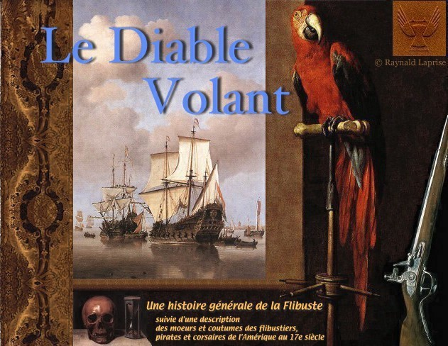

|  |
|
Le Diable Volant présente : Une Histoire générale des flibustiers, ces pirates et corsaires de l'Amérique durant la seconde moitié du XVIIe siècle, depuis leur origine, qui remonte à la Conquête des Indes Occidentales par les Espagnols (leur principaux ennemis et victimes), jusqu'à la fin de la Guerre du roi Guillaume. La Coutume de la Côte, contenant une description de l'époque, de la vie et des moeurs des pirates et corsaires de Saint-Domingue, de la Jamaïque et autres lieux dans l'Amérique, de 1648 à 1688. Les textes qui constituaient auparavant les anciens livres 1 et 2 de l'essai intitulé «Des Bouches du Dragon au Golfe de la Floride» sont encore accessibles par les deux liens ci-dessus, mais ils seront remplacés graduellement par de nouveaux textes. L'illustration ornant cette page a été conçue par votre serviteur avec la collaboration posthume d'Adriaen van Utrecht (1599-1653) pour l'ara rouge, de Willem van Aelst (1627-1683) pour le fusil de chasse, de Willem Willemsz. van De Velde (1633-1707) pour les navires en rade, de Philippe de Champaigne (1602-1674) pour le crâne et le sablier, et du chevalier Anthony Van Dyck (1599-1641) ou l'un de ses élèves pour la draperie. Enfin, le logo du Diable Volant a été conçu par Jonathan Sylvestre (2001). |